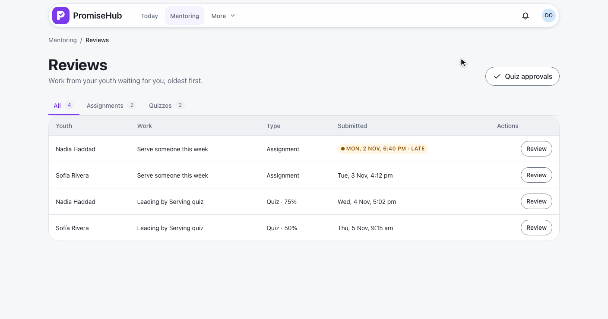
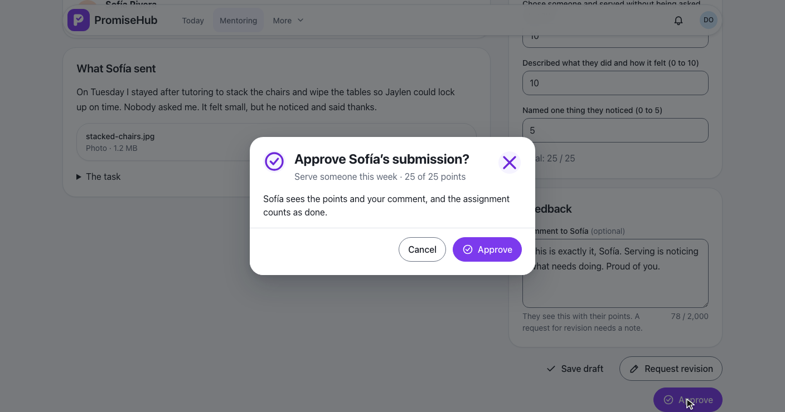
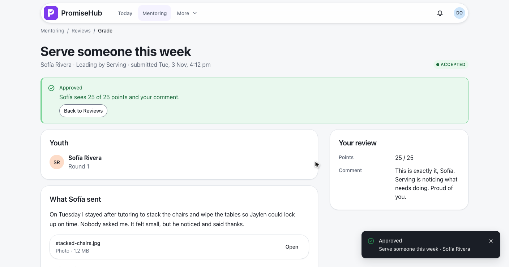
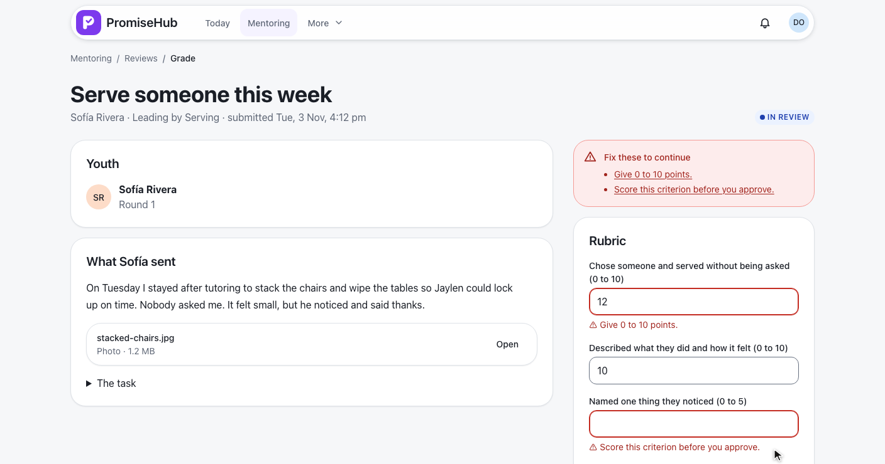
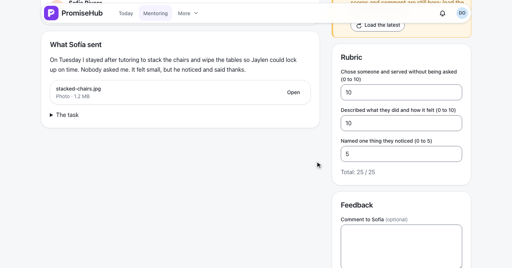
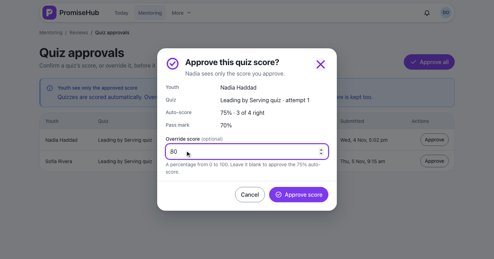
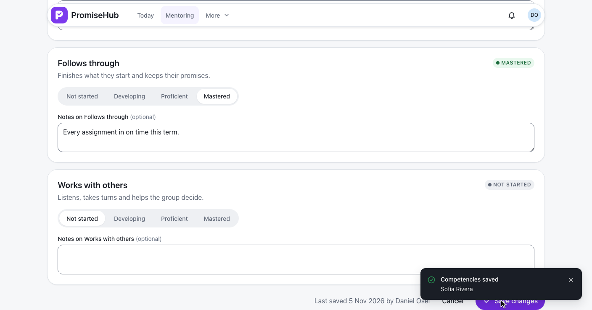

PromiseHub · Video 63
Grade and assess
A mentor grades submissions, approves quiz results and assesses competencies
A mentor grades submissions, approves quiz results and assesses competencies
Reviews · 4 from Mentoring, oldest first, Late marked, filters for assignments and quizzes.

GET /mentoring/reviews: Submitted or In review submissions and quiz attempts awaiting approvalMentorScope)MentorYouth onlyWhat she sent beside the rubric, 10, 10 and 5, a comment, Approve and Accepted.


Save draft keeps In review; Request revision with a required note sends it back.
| Check | Refused with |
|---|---|
| A score outside 0 to the criterion's points | 422 scores.N |
| Approve with a criterion unscored | 422 scores.N |
| Revise without a note | 422 comment |
| Already Accepted or Needs revision | 409 not-reviewable |
| A version that has moved on | 409 stale |


AssignmentSubmission.Version: a concurrency token every change advancesNadia’s 75% approved with an override of 80, then Approve all.

POST /mentoring/quiz-attempts/{id}/approve with an optional override, 0 to 100AutoScore kept; the approved score becomes the attempt's score and passPOST /mentoring/quiz-approvals/approve-all: each at its auto-score, each auditedServes others to Proficient with a note, Speaks up to Developing, Save changes.

PUT /mentoring/youth/{childId}/competenciesCompetencyAssessment per changed competency, audited CreatedReviews and the rubric in one column, every field labelled with its range.
Invalid, stale, failed, not his youth, all caught up and Learning off.
Next: authoring badges and progression